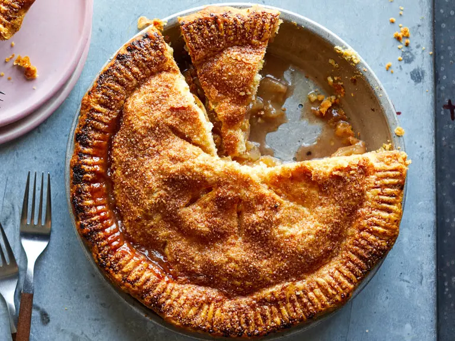

Apple Pie Filling

Description
Peel and core the fruit, cut it into slices, then macerate
them in a plume of sugar. Cook these soft with a splash of
acid (like lemon juice or cider vinegar) and a hint of
cinnamon and allspice, then add some starch to thicken the
whole. Allow the mixture to cool completely before using
it in the pie.
Ingredients
Yield: 8 servings
- 2 tablespoons unsalted butter
- 2½ pounds apples, peeled and cored, then cut into wedges
(5 large honeycrisps will do it)
- ¼ teaspoon ground allspice
- ½teaspoon ground cinnamon
- ¼teaspoon kosher salt
- ¾cup plus 1 tablespoon sugar
- 2 tablespoons all-purpose flour
- 2 teaspoons cornstarch
- 1 tablespoon apple cider vinegar
- 1 recipe pie crust
- 1 egg, lightly beaten
Steps
- Melt butter in a large saute pan set over medium-high
heat and add apples to the pan. Stir to coat fruit
with butter and cook, stirring occasionally. Meanwhile,
whisk together the spices, salt and ¾ cup sugar, and
sprinkle this over the pan, stirring to combine. Lower
heat and cook until apples have started to soften,
approximately 5 to 7 minutes. Sprinkle the flour and
cornstarch over the apples and continue to cook, stirring
occasionally, another 3 to 5 minutes. Remove pan from
heat, add cider vinegar, stir and scrape fruit mixture
into a bowl and allow to cool completely. (The fruit
mixture will cool faster if spread out on a rimmed
baking sheet.)
- Place a large baking sheet on the middle rack of oven
and preheat to 425. Remove one disc of dough from the
refrigerator and, using a pin, roll it out on a lightly
floured surface until it is roughly 12 inches in diameter.
Fit this crust into a 9-inch pie plate, trimming it to
leave a .5-inch overhang. Place this plate, with the dough,
in the freezer.
- Roll out the remaining dough on a lightly floured surface
until it is roughly 10 or 11 inches in diameter.
- Remove pie crust from freezer and put the cooled pie filling
into it. Cover with remaining dough. Press the edges together,
trim the excess, then crimp the edges with the tines of a fork.
Using a sharp knife, cut three or four steam vents in the top
of the crust. Lightly brush the top of the pie with egg wash
and sprinkle with remaining tablespoon of sugar.
- Place pie in oven and bake on hot baking sheet for 20 minutes,
then reduce temperature to 375. Continue to cook until the
interior is bubbling and the crust is golden brown, about 30
to 40 minutes more. Remove and allow to cool on a windowsill
or kitchen rack, about two hours.
Recipe Source